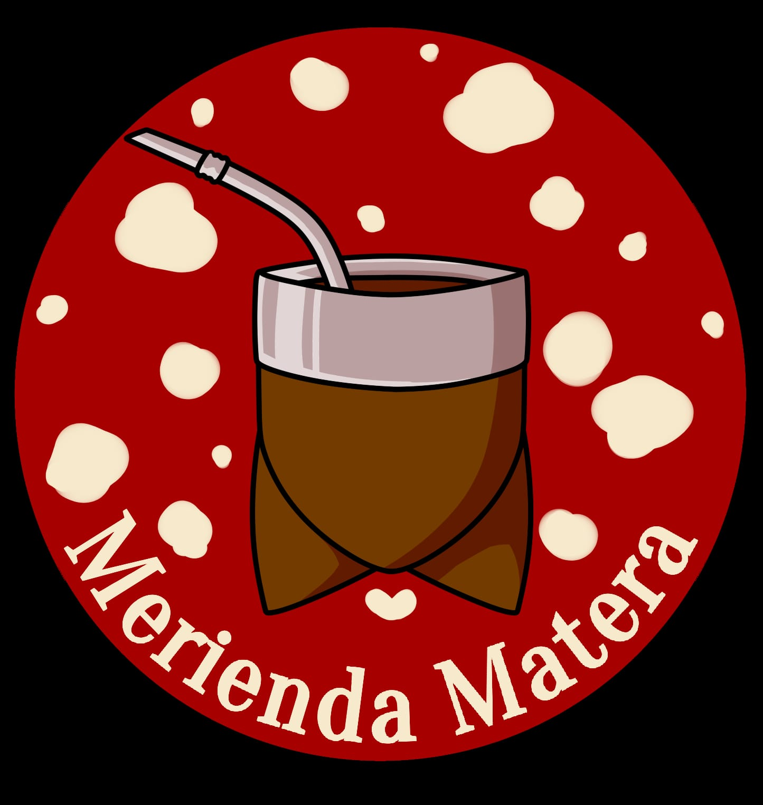

Merienda Matera
Este emprendimiento llamado "merienda matera" se especializa en la preparación de comidas dulces y saladas para compartir con unos buenos mates o simplemente disfrutar en tu día. Ofrece delicias como chipas recién horneados, necesarios para empezar un buen día, hecho con ingredientes de alta calidad. Tambien podrás encontrar cookies con chips, hechas para acompañarlas con una bebida bien caliente. Tiene el propósito de que sus clientes disfruten de una merienda rica y sin gastar de más. Podrán encontrarlo en @merienda.matera